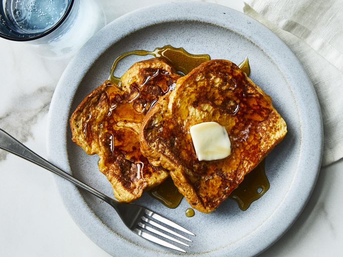

French Toast

Description
This fabulous French toast recipe works with many types of bread — white, whole wheat, brioche, cinnamon-raisin, Italian, or French! Delicious served hot with butter and maple syrup.
If you're looking for the best French toast recipe on the internet, you've come to the right place. This tender, fluffy, and indulgent recipe comes together quickly and easily with just five ingredients you already have on hand.
Ingredients
⅔ cup milk
2 large eggs
1 teaspoon vanilla extract (Optional)
¼ teaspoon ground cinnamon (Optional)
salt to taste
6 thick slices bread
1 tablespoon unsalted butter, or more as needed
Steps
- Gather all ingredients.
- Whisk milk, eggs, vanilla, cinnamon, and salt together in a shallow bowl.
- Lightly butter a griddle or skillet and heat over medium-high heat.
- Dunk bread in the egg mixture, soaking both sides.
- Transfer to the hot skillet and cook until golden, 3 to 4 minutes per side.
- Serve hot.